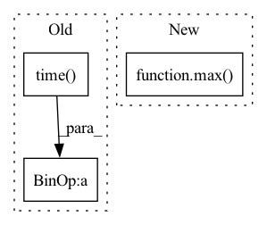

Pattern ID :20277
Before Change
draw.text(text_origin, str(label,"UTF-8"), fill=(0, 0, 0), font=font)
del draw
print("time:",time.time()- start_time)
return image
After Change
font = ImageFont.truetype(font="model_data/simhei.ttf",size=np.floor(3e-2 * np.shape(image)[1] + 0.5).astype("int32"))
thickness = max( (np.shape(old_image)[0] + np.shape(old_image)[1]) // old_width * 2, 1)
image = old_image
for i, c in enumerate(label):
In pattern: SUPERPATTERN
Frequency: 3
Non-data size: 3
Instances Fragment ID: 65966994
Project Name: bubbliiiing/faster-rcnn-pytorch
Commit Name: d456f02a402fd8cf8db1d991aa612439b3c0ffb2
Time: 2021-01-30
Author: 47347516+bubbliiiing@users.noreply.github.com
File Name: frcnn.py
M Class Name: FRCNN
N Class Name: FRCNN
M Method Name: detect_image(2)
N Method Name: detect_image(2)
M Parent Class: object
N Parent Class: object
M File Name: frcnn.py
N File Name: frcnn.py
M Start Line: 99
M End Line: 172
N Start Line: 106
N End Line: 169
Before Change
if self._estimator_index is not None:
self._active_estimators.remove(estimator)
self._estimator_index -= 1
self._state.time_from_start = time.time() - self._start_time_flag
if self._state.time_budget > self._state.time_from_start:
search_state.search_alg.searcher._is_ls_ever_converged = True
if (After Change
self._search_states[e].init_eci / eci_base * self._eci[0]
)
self._estimator_index = 0
min_budget = max( 10 * self._eci[0], sum(self._eci))
max_budget = 10000 * self._eci[0]
if search_state.sample_size:
ratio = search_state.data_size / search_state.sample_size
min_budget *= ratio Fragment ID: 65966995
Project Name: microsoft/flaml
Commit Name: 16a97bec76ba101d62b1eb05484b20cc7c271e1c
Time: 2021-09-23
Author: wang.chi@microsoft.com
File Name: flaml/automl.py
M Class Name: AutoML
N Class Name: AutoML
M Method Name: _search_sequential(1)
N Method Name: _search_sequential(1)
M Parent Class:
N Parent Class:
M File Name: flaml/automl.py
N File Name: flaml/automl.py
M Start Line: 1953
M End Line: 1964
N Start Line: 1747
N End Line: 1971
Before Change
self.logger.record("rollout/ep_rew_mean", safe_mean([ep_info["r"] for ep_info in self.ep_info_buffer]))
self.logger.record("rollout/ep_len_mean", safe_mean([ep_info["l"] for ep_info in self.ep_info_buffer]))
self.logger.record("time/fps", fps)
self.logger.record("time/time_elapsed", int(time.time() - self.start_time), exclude="tensorboard")
self.logger.record("time/total_timesteps", self.num_timesteps, exclude="tensorboard")
self.logger.dump(step=self.num_timesteps)
After Change
// Display training infos
if log_interval is not None and iteration % log_interval == 0:
time_elapsed = max( (time.time_ns() - self.start_time) / 1e9, sys.float_info.epsilon)
fps = int((self.num_timesteps - self._num_timesteps_at_start) / time_elapsed)
self.logger.record("time/iterations", iteration, exclude="tensorboard")
if len(self.ep_info_buffer) > 0 and len(self.ep_info_buffer[0]) > 0:
self.logger.record("rollout/ep_rew_mean", safe_mean([ep_info["r"] for ep_info in self.ep_info_buffer])) Fragment ID: 65966993
Project Name: dlr-rm/stable-baselines3
Commit Name: b1cc15970a40c86b26a247fab5783e025bfe3da1
Time: 2022-07-25
Author: adam@gleave.me
File Name: stable_baselines3/common/on_policy_algorithm.py
M Class Name: OnPolicyAlgorithm
N Class Name: OnPolicyAlgorithm
M Method Name: learn(10)
N Method Name: learn(10)
M Parent Class: BaseAlgorithm
N Parent Class: BaseAlgorithm
M File Name: stable_baselines3/common/on_policy_algorithm.py
N File Name: stable_baselines3/common/on_policy_algorithm.py
M Start Line: 257
M End Line: 263
N Start Line: 258
N End Line: 265